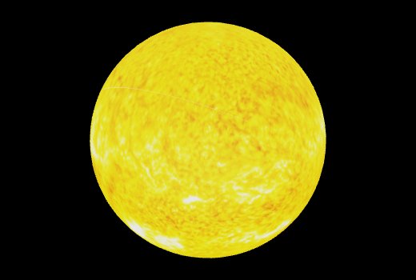

Here you can see our sun and planets from our solar system decending from the sun
Sun

A star is a hot, glowing ball of gas. When you look up in the night sky, you can see countless twinkling stars. Can you see any stars during the daytime? Of course! The light of daytime comes from our closest star: the Sun.
Mercury is the smallest planet in our solar system. It's just a little bigger than Earth's moon. It is the closest planet to the sun, but it's actually not the hottest. Venus is hotter.
Even though Venus isn't the closest planet to the Sun, it is still the hottest. It has a thick atmosphere full of the greenhouse gas carbon dioxide and clouds made of sulfuric acid. The gas traps heat and keeps Venus toasty warm. In fact, it's so hot on Venus, metals like lead would be puddles of melted liquid.
Our home planet Earth is a rocky, terrestrial planet. It has a solid and active surface with mountains, valleys, canyons, plains and so much more. Earth is special because it is an ocean planet. Water covers 70% of Earth's surface.
Jupiter is the biggest planet in our solar system. It's similar to a star, but it never got massive enough to start burning. It is covered in swirling cloud stripes. It has big storms like the Great Red Spot, which has been going for hundreds of years. Jupiter is a gas giant and doesn't have a solid surface, but it may have a solid inner core about the size of Earth. Jupiter also has rings, but they're too faint to see very well.
Saturn isn't the only planet to have rings, but it definitely has the most beautiful ones. The rings we see are made of groups of tiny ringlets that surround Saturn. They're made of chunks of ice and rock. Like Jupiter, Saturn is mostly a ball of hydrogen and helium.
Uranus is made of water, methane, and ammonia fluids above a small rocky center. Its atmosphere is made of hydrogen and helium like Jupiter and Saturn, but it also has methane. The methane makes Uranus blue.
Neptune is dark, cold, and very windy. It's the last of the planets in our solar system. It's more than 30 times as far from the sun as Earth is. Neptune is very similar to Uranus. It's made of a thick fog of water, ammonia, and methane over an Earth-sized solid center. Its atmosphere is made of hydrogen, helium, and methane. The methane gives Neptune the same blue color as Uranus. Neptune has six rings, but they're very hard to see.
Pluto is categorized as a dwarf planet. In 2006, Pluto was categorized with three other objects in the solar system that are about the same small size as Pluto: Ceres, Makemake and Eris. These objects, along with Pluto, are much smaller than the "other" planets.